Revisió i Correcció de Vulnerabilitats¶
1. Introducció¶
S'ha executat una eina d'auditoria pròpia sobre el servidor (192.168.0.101) per detectar vulnerabilitats en els serveis exposats. L'eina analitza els ports oberts, identifica CVEs conegudes associades a les versions dels serveis, i reporta problemes de configuració que podrien comprometre la seguretat del sistema.
A continuació es documenten els resultats obtinguts i les accions correctives aplicades per mitigar les vulnerabilitats més crítiques.
2. Resultats de l'auditoria¶
2.1. Vulnerabilitats al port 22 (SSH) i port 3306 (MySQL)¶
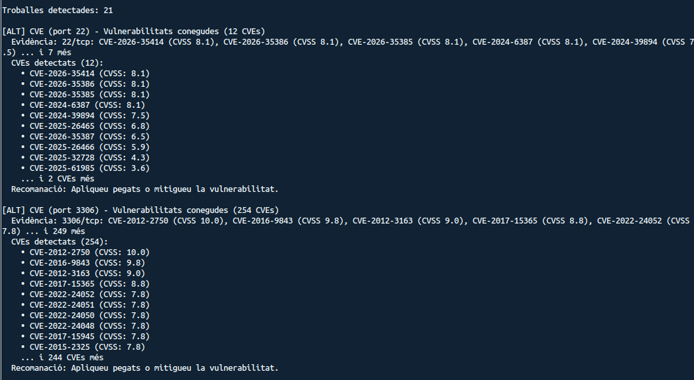
L'eina ha detectat un total de 21 troballes. En primer lloc, al port 22 (SSH) s'han identificat 12 CVEs associades a la versió d'OpenSSH instal·lada, amb puntuacions CVSS que van des de 3.6 fins a 8.1. Les més crítiques inclouen CVE-2026-35414, CVE-2026-35386, CVE-2026-35385 i CVE-2024-6387, totes amb CVSS 8.1.
Al port 3306 (MySQL/MariaDB) s'han trobat 254 CVEs, algunes amb la puntuació màxima de CVSS 10.0 (CVE-2012-2750) i altres molt crítiques com CVE-2016-9843 (CVSS 9.8) i CVE-2012-3163 (CVSS 9.0). Aquestes vulnerabilitats estan relacionades amb la versió del motor de base de dades.
2.2. Vulnerabilitats al port 80 (HTTP) i port 139 (NetBIOS/SMB)¶
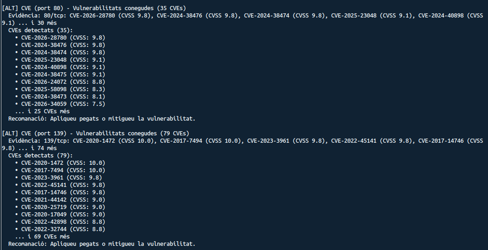
Al port 80 (HTTP/Apache) s'han detectat 35 CVEs amb puntuacions molt elevades. Destaquen CVE-2026-28780 i CVE-2024-38476 (CVSS 9.8), i CVE-2025-23048 i CVE-2024-40898 (CVSS 9.1). Aquestes vulnerabilitats corresponen a la versió d'Apache instal·lada al servidor.
Al port 139 (NetBIOS/SMB) s'han identificat 79 CVEs, incloent CVE-2020-1472 i CVE-2017-7494 amb la puntuació màxima de CVSS 10.0. Són vulnerabilitats associades a la versió del servei Samba.
2.3. Vulnerabilitats al port 445 (SMB) i problemes de configuració HTTP/SMB¶
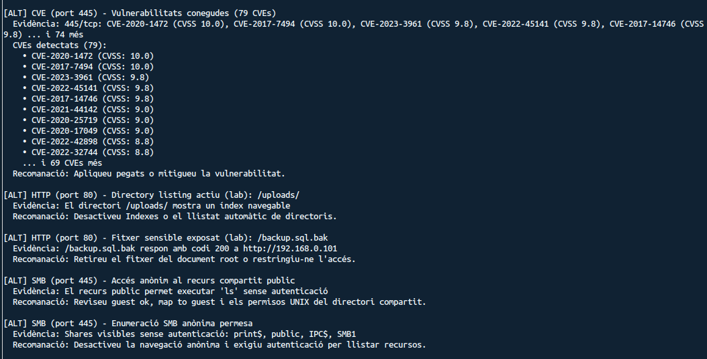
Al port 445 (SMB) es repeteixen les mateixes 79 CVEs que al port 139, ja que ambdós ports donen servei al protocol SMB amb la mateixa versió de Samba.
A més de les CVEs, l'eina ha detectat diversos problemes de configuració:
- Directory listing actiu a
/uploads/: El directori/uploads/del servidor web mostra un índex navegable, cosa que permet a qualsevol atacant llistar i descarregar els fitxers que hi ha. - Fitxer sensible exposat (
/backup.sql.bak): S'ha trobat un fitxer de còpia de seguretat de la base de dades accessible públicament, que respon amb codi 200 ahttp://192.168.0.101/backup.sql.bak. - Accés anònim al recurs compartit
public(SMB): El recurs compartit permet executar comandes comlssense autenticació. - Enumeració SMB anònima permesa: Es poden llistar els recursos compartits (
print$,public,IPC$,SMB1) sense necessitat d'autenticar-se.
2.4. Vulnerabilitats de criticitat mitjana¶
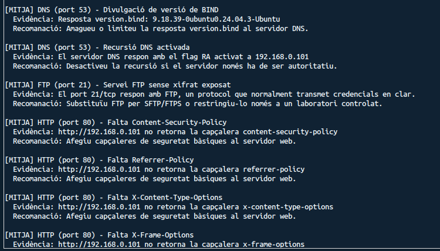
L'eina també ha identificat vulnerabilitats de criticitat mitjana [MITJA]:
- Divulgació de versió de BIND (port 53): El servidor DNS respon amb la versió exacta del programari (
9.18.39-0ubuntu0.24.04.3-Ubuntu), cosa que facilita la cerca de CVEs específiques per part d'un atacant. - Recursió DNS activada: El servidor DNS respon amb el flag RA activat, permetent que sigui utilitzat per a atacs de recursió.
- Servei FTP sense xifrat (port 21): El servei FTP transmet credencials en clar, cosa que el fa vulnerable a atacs de tipus man-in-the-middle.
- Falta de capçaleres de seguretat HTTP (port 80): No es retornen les capçaleres
Content-Security-Policy,Referrer-Policy,X-Content-Type-OptionsniX-Frame-Options, que protegeixen contra atacs XSS, clickjacking i injecció de contingut.
3. Correccions aplicades¶
3.1. Actualització del sistema i dels serveis (SSH)¶
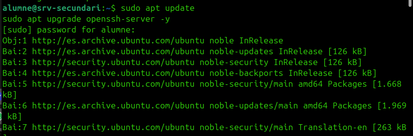
Per corregir les vulnerabilitats més crítiques del servei SSH, s'ha procedit a actualitzar el sistema operatiu i el paquet OpenSSH mitjançant les comandes:
Amb aquesta actualització s'apliquen els pegats de seguretat disponibles per a la versió d'OpenSSH, mitigant les CVEs reportades amb CVSS 8.1.
Cal destacar que no s'ha modificat cap paràmetre de la configuració de SSH (com ara el fitxer sshd_config). S'ha pres la decisió de no endurir la configuració d'aquest servei per precaució, ja que ens feia por perdre la connectivitat remota i no poder tornar a connectar-nos al servidor.
3.2. Restricció del port de MySQL (bind-address)¶
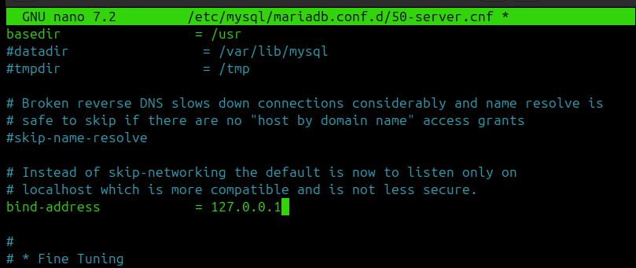
Per mitigar les 254 CVEs associades al port 3306, s'ha configurat MariaDB perquè només escolti connexions locals. S'ha editat el fitxer /etc/mysql/mariadb.conf.d/50-server.cnf i s'ha establert:
D'aquesta manera, el port 3306 deixa d'estar exposat a la xarxa, i les vulnerabilitats associades deixen de ser explotables remotament.
3.3. Desactivació del directory listing a Apache¶
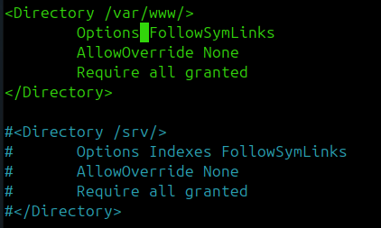
Per resoldre el problema del directory listing actiu a /uploads/, s'ha modificat la configuració d'Apache al bloc <Directory /var/www/>. S'ha eliminat l'opció Indexes de la directiva Options, deixant només FollowSymLinks:
Això impedeix que Apache mostri el llistat de fitxers dels directoris que no tenen un fitxer index.html o index.php.
3.4. Eliminació del fitxer de backup exposat¶
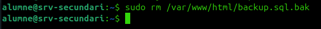
S'ha eliminat el fitxer de còpia de seguretat que estava exposat públicament al document root del servidor web:
D'aquesta manera, el fitxer ja no és accessible des del navegador i s'evita la filtració de dades sensibles de la base de dades.
3.5. Afegir capçaleres de seguretat HTTP a Apache¶
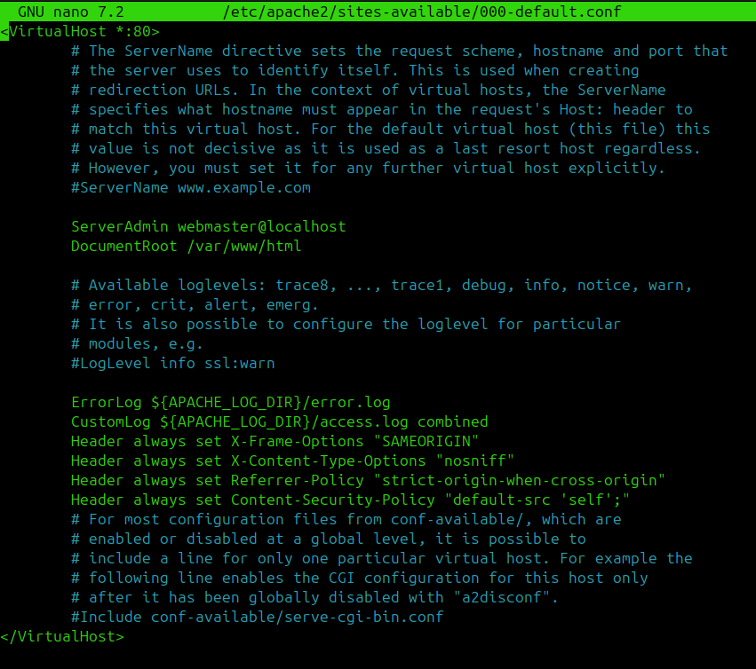
Per resoldre la manca de capçaleres de seguretat HTTP, s'ha editat el fitxer de configuració del VirtualHost d'Apache (/etc/apache2/sites-available/000-default.conf) i s'hi han afegit les línies següents:
Header always set X-Frame-Options "SAMEORIGIN"
Header always set X-Content-Type-Options "nosniff"
Header always set Referrer-Policy "strict-origin-when-cross-origin"
Header always set Content-Security-Policy "default-src 'self';"
Aquestes capçaleres protegeixen contra:
- Clickjacking (
X-Frame-Options): impedeix que la pàgina sigui carregada dins d'un iframe extern. - MIME-type sniffing (
X-Content-Type-Options): evita que el navegador interpreti fitxers amb un tipus MIME incorrecte. - Filtració de referrer (
Referrer-Policy): controla quina informació s'envia a la capçalera Referer. - Injecció de contingut i XSS (
Content-Security-Policy): restringeix les fonts de contingut permeses.
3.6. Ocultació de la versió d'Apache¶
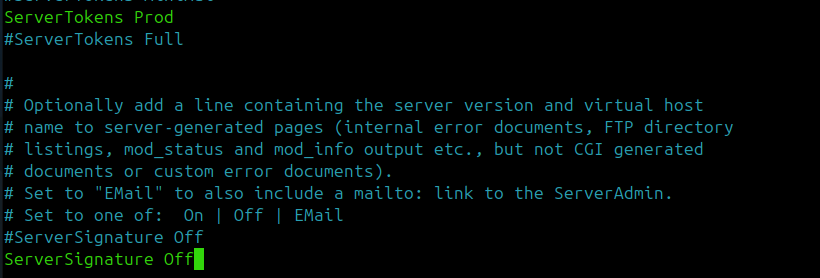
S'ha modificat la configuració global d'Apache per ocultar la versió del servidor en les respostes HTTP i les pàgines d'error. S'han establert els paràmetres:
Amb ServerTokens Prod, Apache només informa que el servidor és "Apache" sense revelar la versió ni els mòduls instal·lats. Amb ServerSignature Off, es desactiva la signatura que apareix a les pàgines d'error generades pel servidor.
3.7. Securització del servei SMB (Samba)¶
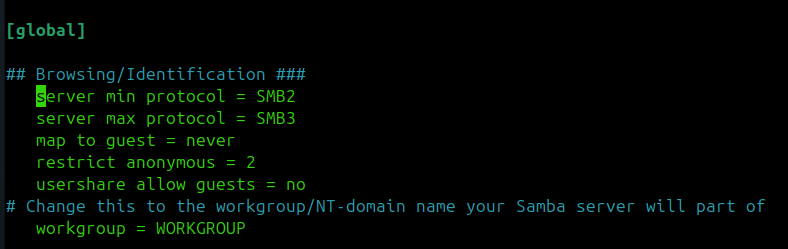
Per corregir les vulnerabilitats d'accés anònim i enumeració SMB, s'ha modificat el fitxer de configuració de Samba (/etc/samba/smb.conf). A la secció [global] s'han aplicat els canvis següents:
[global]
server min protocol = SMB2
server max protocol = SMB3
map to guest = never
restrict anonymous = 2
usershare allow guests = no
server min protocol = SMB2: Desactiva SMB1, un protocol antic amb vulnerabilitats conegudes (com EternalBlue).server max protocol = SMB3: Limita el protocol màxim a SMB3 per garantir connexions xifrades.map to guest = never: Impedeix que les connexions fallides es mapejin automàticament a l'usuari guest.restrict anonymous = 2: Bloqueja completament l'accés anònim, impedint l'enumeració de recursos.usershare allow guests = no: Desactiva l'accés de convidats als recursos compartits.
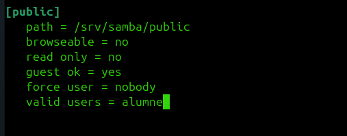
Addicionalment, s'ha modificat la configuració del recurs compartit [public] per restringir-ne l'accés:
[public]
path = /srv/samba/public
browseable = no
read only = no
guest ok = yes
force user = nobody
valid users = alumne
S'ha establert browseable = no perquè el recurs no sigui visible en les enumeracions, i valid users = alumne per restringir l'accés només a l'usuari autoritzat.
4. Vulnerabilitats no corregides¶
També s'han identificat altres vulnerabilitats dins del servidor, però són de criticitat baixa i tenen un impacte limitat sobre el projecte. Algunes d'elles inclouen:
- Divulgació de la versió de BIND al servidor DNS.
- Recursió DNS activada.
- Servei FTP sense xifrat exposat.
Per aquest motiu, s'ha decidit no prioritzar-ne la correcció en aquesta fase, ja que la seva resolució és complexa i no aporta una millora rellevant en el context actual del projecte. Es recomana revisar-les en futures iteracions del procés de bastionament.
5. Verificació posterior (re-escaneig)¶
Un cop aplicades totes les correccions descrites a la secció anterior, s'ha tornat a executar l'eina d'auditoria sobre el servidor (192.168.0.101) per verificar que les mesures han estat efectives i que el nombre de vulnerabilitats s'ha reduït significativament.
Captures pendents
Cal afegir aquí les captures de pantalla del segon escaneig que demostrin la reducció de vulnerabilitats. Puja les imatges a docs/assets/img/lab/arreglar/ i actualitza les referències.
Millores esperades¶
Després d'aplicar les correccions, els resultats esperats del re-escaneig són:
| Servei | Abans | Després | Correccions aplicades |
|---|---|---|---|
| SSH (port 22) | 12 CVEs (CVSS fins a 8.1) | Reduït | Actualització d'OpenSSH |
| MySQL (port 3306) | 254 CVEs (CVSS fins a 10.0) | 0 (port tancat) | bind-address = 127.0.0.1 |
| HTTP (port 80) | 35 CVEs + problemes config | Reduït | Capçaleres, directory listing, backup eliminat |
| SMB (ports 139/445) | 79 CVEs + accés anònim | Reduït | Desactivar SMB1, bloquejar anònim |
Conclusió
El procés de detectar → corregir → verificar demostra el valor de l'eina d'auditoria EbreSafe com a eina de bastionament iteratiu. Les vulnerabilitats més crítiques han estat mitigades, i el servidor presenta una superfície d'atac significativament reduïda respecte a l'estat inicial.